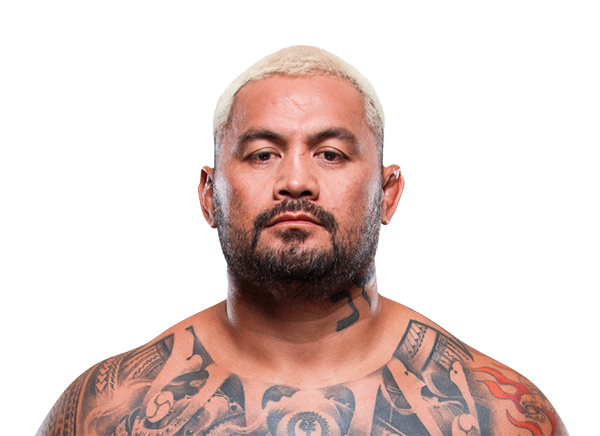

Mark Hunt es un peleador neozelandés de MMA y kickboxing famoso por su poder devastador de nocaut. Nació el 23 de septiembre de 1974 en Auckland, Nueva Zelanda. Compitió principalmente en la división de peso pesado de UFC y es recordado por sus peleas emocionantes y finales inesperados.
Hunt combina técnicas de kickboxing y boxeo con MMA, haciendo de su striking su arma más peligrosa. Su reputación de noquear a sus oponentes con un solo golpe lo convirtió en uno de los peleadores más temidos y respetados dentro de la categoría de peso pesado.

Otros que podrían interesarte: